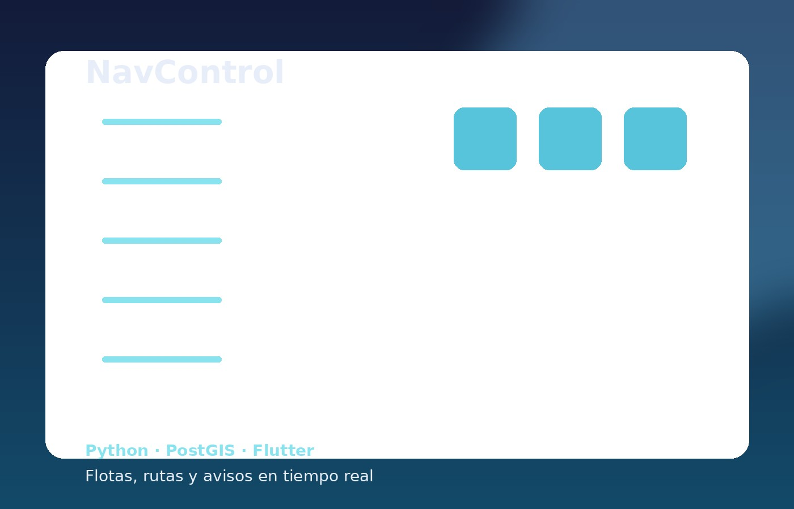

Backend Python con aplicación real
Desarrollo aplicaciones con Django, FastAPI y Flask integrando bases de datos, APIs, lógica de negocio, automatización y despliegue.
Más de 20 años construyendo soluciones digitales. Hoy enfocado en backend con Python, Django, FastAPI, automatización y APIs, pero con una base sólida en WordPress, e-commerce, despliegues, Docker, Linux, VPS, Plesk y WHM. Un perfil técnico amplio, acostumbrado a convertir necesidades reales en soluciones que funcionan en producción.
Desarrollo aplicaciones con Django, FastAPI y Flask integrando bases de datos, APIs, lógica de negocio, automatización y despliegue.
No me limito al código. Entiendo UX, SEO on-page, e-commerce, entornos Linux, VPS, Docker, paneles de hosting y operación real.
Amplia trayectoria ejecutando proyectos de principio a fin, con criterio técnico, capacidad resolutiva y sensibilidad por el resultado final.
La selección prioriza los proyectos que mejor transmiten tu imagen actual: producto, backend, automatización y capacidad de construir soluciones completas.

Plataforma para gestión del alquiler de oficinas y espacios. Proyecto orientado a operaciones, estructura modular y producto web real.

Sistema para localización de flotas, rutas y avisos operativos en tiempo real. Backend, cartografía y aplicación móvil conectados a una necesidad concreta.
Ver proyecto
Backend en Python preparado para web y app móvil, con consumo de datos en tiempo real y flujo de despliegue automatizado.
Ver proyecto
Suite de automatización para Dolibarr: sincronización, scripts a medida, módulos y optimización de flujos de trabajo empresariales.
Ver proyectoAmplia experiencia en WordPress, WooCommerce, PrestaShop, despliegue de webs corporativas, e-commerce y mantenimiento técnico. Esto refuerza una idea importante: no solo desarrollo, también entiendo el ciclo completo de una solución digital, desde la arquitectura hasta la puesta en producción y el soporte.
Mi carrera no es una suma de trabajos inconexos. Es una progresión: diseño y desarrollo web → proyectos digitales completos → especialización técnica en Python, automatización, despliegue e integración.
Desarrollo de webs corporativas, e-commerce y proyectos para clientes. Trabajo con WordPress, Elementor, Prestashop, integraciones, mantenimiento, SEO on-page y puesta en producción.
Proyectos de diseño gráfico, desarrollo web, fotografía y vídeo para múltiples sectores. Etapa clave para construir autonomía, criterio y capacidad de ejecución integral.
Desarrollo backend y frontend, identidades de proyectos y administración técnica de entornos web. Aquí también se consolida la parte de servidores, operación y soporte técnico.
Desarrollo de aplicaciones para televisión, participación de usuarios y maquetación/programación de sitios y plataformas web.
Python, Django, FastAPI, Flask, PostgreSQL, MySQL, SQLite, Pandas, PySpark, APIs REST y lógica de negocio.
HTML, CSS, JavaScript, Bootstrap, WordPress, WooCommerce, Elementor, PrestaShop y SEO on-page.
Linux, VPS, Nginx, Apache, Docker, GitHub Actions, Watchtower, Plesk, WHM, cPanel y certificados SSL.
Automatización, integraciones CRM/ERP, Dolibarr, gestión de proyectos, relación con cliente y visión de negocio.
Escuela Internacional Posgrado · 2022 — 2024
Formación en Python, Django, Flask, APIs REST, PostgreSQL, Docker, Big Data, PySpark, Machine Learning, Deep Learning y desarrollo seguro.
Base creativa con impacto práctico
Mi base en diseño y comunicación visual me ayuda a construir productos más claros, interfaces con criterio y soluciones que también se entienden bien por parte del usuario final.
Interesado en posiciones relacionadas con backend Python, integraciones, automatización, producto web y perfiles híbridos con visión técnica amplia.